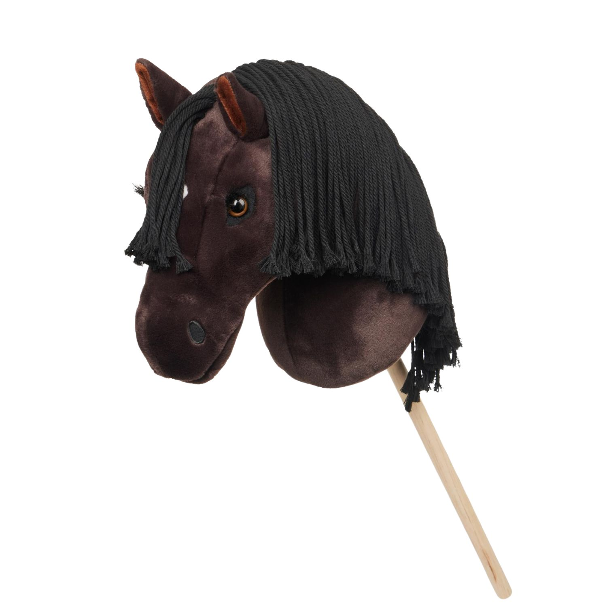
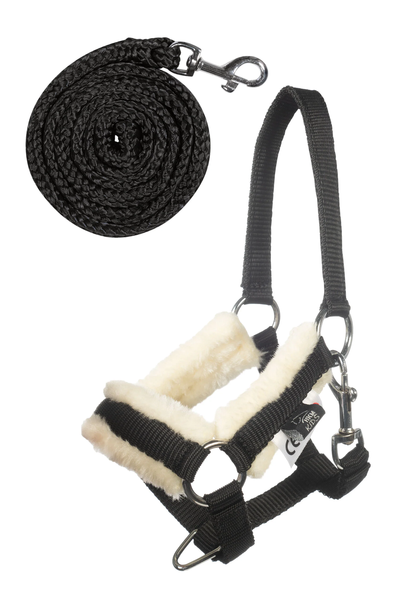
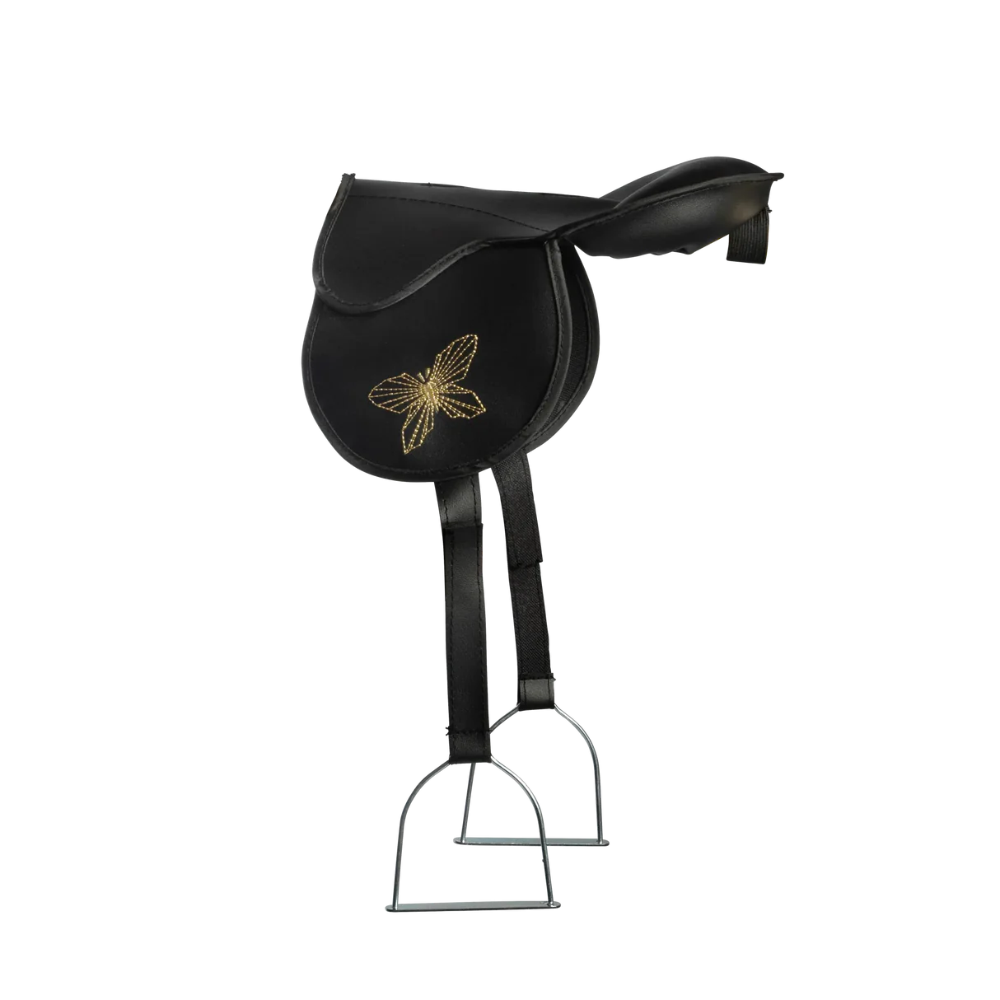

Welche Ausrüstung braucht man?
Ähnlich wie bei anderen Sportarten benötigt man beim Hobbyhorsing spezielle Ausrüstung, darunter das Steckenpferd selbst, einen Zaum (Halfter) und dekorative Sättel. Außerdem brauchen die Reiter passende Kleidung und Schuhe.
Wichtige Ausrüstungsgegenstände
- Steckenpferd: Das Herzstück – meist individuell gestaltet und handgefertigt.
- Halfter: Wird am Steckenpferd befestigt, oft bunt und dekorativ.
- Sattel: Häufig als Accessoire für Dressur- und Showauftritte genutzt.
- Kleidung: Bequeme Sportkleidung, die Bewegungsfreiheit ermöglicht.
- Schuhe: Rutschfeste und stabile Sportschuhe für sichere Bewegungen.
Weitere Fakten
- Viele Hobbyhorsing-Fans basteln und individualisieren ihre Ausrüstung selbst.
- Materialien reichen von Holz und Stoff bis zu Kunstleder und Plastik.
- Die richtige Ausrüstung unterstützt nicht nur den Spaß, sondern auch die Sicherheit.
- In Hobbyhorsing-Communities gibt es oft Equipment-Tauschbörsen und Verkauf.
Equipment Gallery


